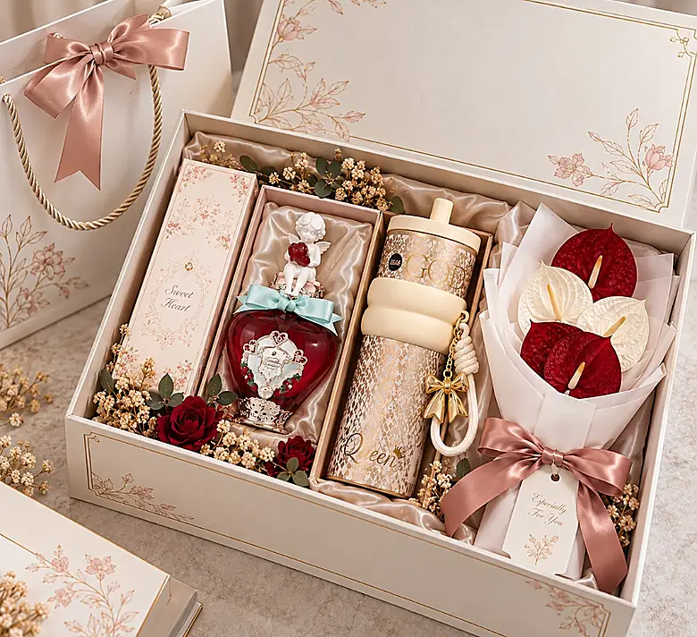

Memilih hampers corporate yang tepat bukan sekadar memilih kotak cantik dengan isi mahal. Hampers corporate adalah representasi perusahaan Anda — ia menyampaikan apresiasi, membangun hubungan, dan meninggalkan kesan yang bertahan lama bagi penerimanya.
Artikel ini membahas langkah-langkah praktis untuk memilih hampers corporate yang efektif, mulai dari memahami penerima hingga menentukan level personalisasi yang tepat.
Daftar Isi Artikel
Navigasi CepatTips Kunci: Hampers corporate yang sukses selalu berfokus pada kualitas kurasi dan kemasan berkelas, bukan sekadar jumlah item yang banyak di dalam kotak.
1. Kenali Siapa Penerimanya
Langkah pertama dan paling penting adalah memahami siapa yang akan menerima hampers. Penerima yang berbeda memerlukan pendekatan yang berbeda:
- Klien dan partner bisnis: Pilih hampers dengan kesan profesional dan premium. Item bermerek atau gourmet food biasanya diterima baik.
- Karyawan: Pertimbangkan item yang fungsional dan personal — tumbler, planner, atau snack yang bisa dinikmati bersama keluarga.
- Eksekutif atau VIP: Hampers dengan item eksklusif seperti wine, cokelat artisan, atau set premium akan memberikan kesan istimewa.
2. Tentukan Momen dan Tujuan
Momen pemberian hampers memengaruhi pemilihan tema, kemasan, dan isi paket. Beberapa momen umum untuk hampers corporate:
- Hari raya — Lebaran, Natal, Tahun Baru, Imlek
- Akhir tahun — Apresiasi kinerja tahunan
- Onboarding — Menyambut karyawan baru
- Launching produk atau event — Merchandise eksklusif
- Apresiasi klien — Memperkuat hubungan bisnis
Dengan mengetahui momen secara jelas, Anda dapat memilih tema dan pesan yang sesuai pada kartu ucapan.
3. Sesuaikan dengan Anggaran
Anggaran per unit hampers sangat bervariasi tergantung isi, kemasan, dan jumlah pesanan. Beberapa tips mengelola anggaran:
- Tentukan total budget dan jumlah penerima untuk menghitung anggaran per unit.
- Prioritaskan kemasan rapi dan isi yang berkualitas, bukan kuantitas item.
- Tanyakan apakah vendor menyediakan opsi di beberapa range harga.
- Jangan lupa memperhitungkan biaya personalisasi (jika ada) dan pengiriman.
4. Pertimbangkan Level Personalisasi
Personalisasi membuat hampers lebih bermakna. Beberapa opsi personalisasi yang umum tersedia:
| Elemen | Opsi Personalisasi |
|---|---|
| Kemasan | Warna, material, ukuran sesuai brand |
| Logo | Cetak pada kotak, sleeve, atau pita |
| Kartu ucapan | Desain custom, teks personal, tulisan tangan |
| Isi paket | Pilih item sesuai preferensi penerima |
| Finishing | Pita, dried flower, wax seal, tissue paper |
5. Pilih Isi Paket yang Bermakna
Isi hampers sebaiknya dipilih berdasarkan relevansi, kualitas, dan kemudahan penggunaan. Beberapa kategori item populer:
- Makanan & minuman: Cokelat artisan, kopi spesialti, teh premium, kurma, cookies, madu
- Fungsional: Tumbler, mug, planner, tote bag, payung
- Wellness: Lilin aromaterapi, essential oil, hand cream
- Dekoratif: Dried flower arrangement, tanaman mini
Hindari memilih item yang terlalu generic. Item yang dipilih dengan seksama menunjukkan perhatian yang lebih dibanding hampers dengan banyak item biasa.
6. Pilih Vendor yang Tepat
Vendor hampers yang baik akan membantu Anda dari konsultasi kebutuhan hingga pengiriman. Pertimbangkan hal-hal berikut saat memilih vendor:
- Apakah vendor menyediakan opsi personalisasi yang Anda butuhkan?
- Apakah ada portofolio proyek sebelumnya yang bisa dilihat?
- Bagaimana proses komunikasi dan responsivitasnya?
- Apakah vendor menangani pengiriman multi-alamat?
- Apakah ada quality control sebelum pengiriman?
Baca juga: Tips Menentukan Anggaran Hampers Perusahaan yang Efektif — panduan lengkap alokasi budget per tier penerima.

Pertanyaan Umum (FAQ) Seputar Hampers Corporate
Berikut pertanyaan yang paling sering diajukan oleh HR dan procurement perusahaan:
Punya pertanyaan lain? Kunjungi halaman FAQ lengkap kami atau langsung hubungi tim kami.
Butuh Bantuan Memilih Hampers Corporate?
Tim konsultan kami siap membantu menemukan paket yang tepat sesuai preferensi penerima, identitas branding, dan alokasi budget perusahaan Anda.
Konsultasi via WhatsApp